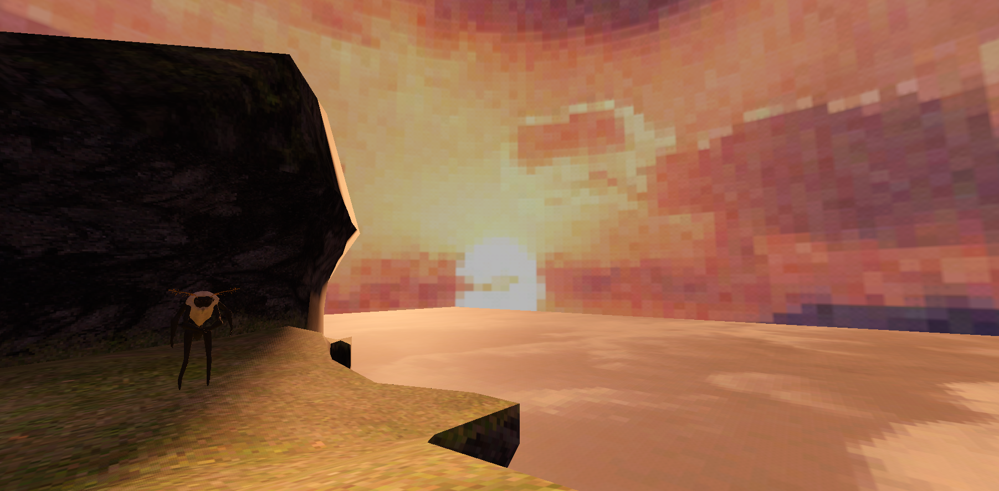

Henry Tripp Barrick
Amotheosis

Amotheosis was a project I developed from around mid October to early December 2023 as a part of a club I was associated with at UCSC. Given the time frame of the project as well as managing a full course load the scope of the game was set fairly small.
Almost all of the games assets were environmental, with the Moth being the only non-environmental asset made for the project

I chose the environment of a very imposing mountain range since most of the environments I had seen using the retro pixel art style at the time all used enclosed or artificial environments, and I wanted to try something different.